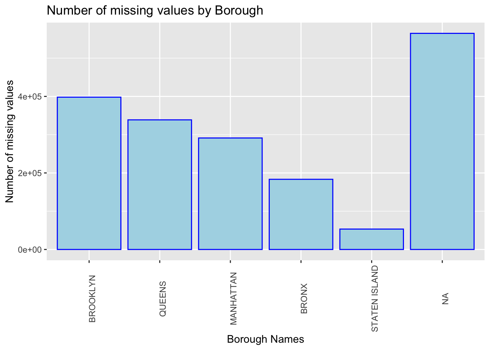
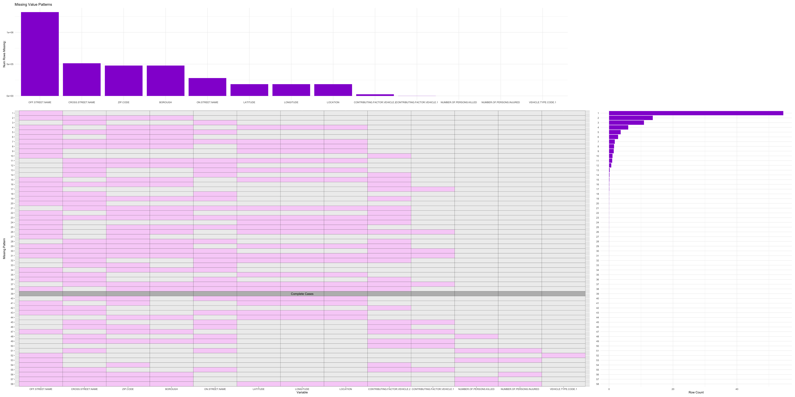

Chapter 4 Missing Values
4.1 Missing Values Analysis for Motor Vehicle Crash Analysis
4.1.1 Missing values by column
We focus only on the 20 column values with missing data for the rest of our missing value analysis (to improve graph readability).
4.1.2 Bar Plot to show number of missing values by Borough

The graph above plots the number of missing values for each given Borough. When Borough values aren’t available (NA value) then the chances of other information in about the accident being available is also low.
4.2 Missing Value Analysis for Missing Value Patterns plot in all data of vehicles involved in a collision
4.2.1 Missing Pattern Plot Function
When considering all of the data, information of the 4th and 5th vehicle is missing maximum number of times because it may not be too frequent to have a 5 or 4 car collision. Therefore, to better understand about the missing values (and the combinations in which they may be frequent) in the data set, we plot the missing value patterns for each of the 5, 4, 3, 2, and 1 vehicle collisions.
4.2.2 Missing Value Patterns plot for Vehicles involved in 5 vehicle collisions
Majority of the data entries (with 40+ entries) only missed on the Off Street name entry. The second most missed combination of entries are the address related entries i.e. Off Street name, Cross Street name, Zip Code, and Borough.
4.2.3 Missing Value Patterns plot for Vehicles involved in 4 vehicle collisions

Majority of the data entries (with 40+ entries) only missed on the Off Street name entry. The second most missed combination of entries are the address related entries i.e. Off Street name, Cross Street name, Zip Code, and Borough.
4.2.4 Missing Value Patterns plot for Vehicles involved in 3 vehicle collisions
Majority of the data entries (with 40+ entries) only missed on the Off Street name entry. The second most missed combination of entries are the address related entries i.e. Off Street name, Cross Street name, Zip Code, and Borough.
4.2.5 Missing Value Patterns plot for Vehicles involved in 2 vehicle collisions

Since only 2 vehicle is involved in the collision, its documentation has complete case instance too. Even otherwise, majority of the data entries only missed on the Off Street name entry (40+ times). The second most missed combination of entries are the address related entries i.e. Off Street name, Cross Street name, Zip Code, and Borough.
4.2.6 Missing Value Patterns plot for Vehicles involved in 1 vehicle collision

Since only 1 vehicle is involved in the collision, its documentation has complete case instance too. Here also, even otherwise, majority of the data entries only missed on the Off Street name entry (40+ times). The second most missed combination of entries are the address related entries i.e. Off Street name, Cross Street name, Zip Code, and Borough.
4.3 Final Inference from above graphs
The common inference across all graphs is that 40+ instances of Off Street are not present in any records of the collisions. Further, the second most missed combination of entries are the address related entries i.e. Off Street name, Cross Street name, Zip Code, and Borough also occurs across all types of collisions (based on the number of vehicles involved).